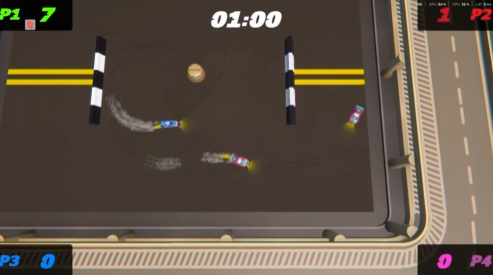
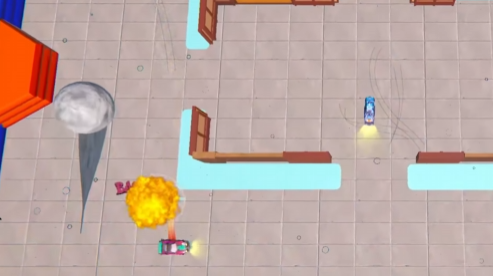
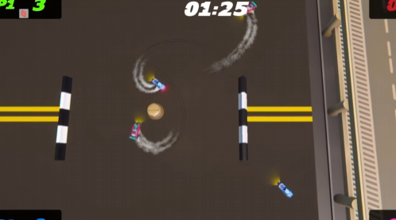
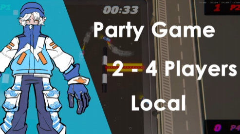
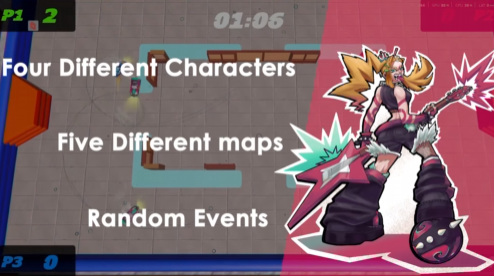
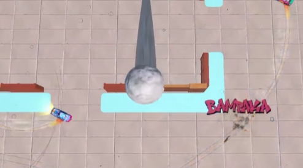

En un Japón alternativo, donde la tradición milenaria choca con la decadencia urbana y el exceso tecnológico, ha surgido un fenómeno que paraliza las calles: BAMPAKA. No es solo una competición de carreras; es un campo de batalla sobre ruedas donde parias, visionarios y rebeldes luchan por algo más que el primer puesto.
La historia sigue el ascenso de estas figuras en el circuito BAMPAKA. Lo que empieza como la búsqueda de dinero, fama o redención se convierte en una conspiración que amenaza con destruir la cultura del motor clandestino. Los pilotos deberán decidir si mantienen sus rivalidades o si se unen para proteger el asfalto que consideran su hogar. Entre coches inspirados en leyendas del JDM —modificados para la guerra con palas quitanieves, motores expuestos y pinturas extravagantes—, cada carrera es un paso hacia la gloria o el desguace.





